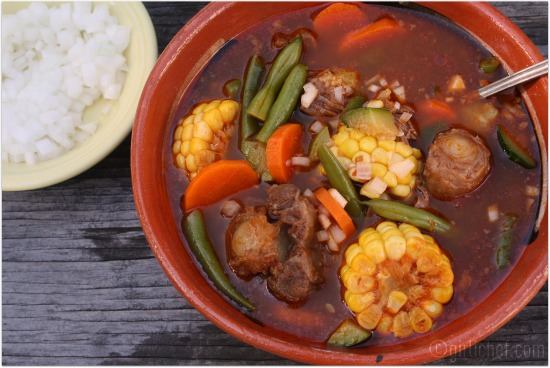

Mole de olla

Ingredientes
- 1KG de espinazo de res en trozos
- 1/2 cebolla
- 1 diente de ajo
- 2 ramas de epazote
- 1 chile ancho (sin venas ni semillas)
- 1 chile pasilla (sin venas ni semillas)
- 1 jitomate
- 1 clavo de olor
- 2 zanahorias en rodajas
- 2 papas en cubos
- 2 calabazas en medias lunas
- 2 elotes en tres trozos C/U
- Sal al gusto
Procedimiento
- Se pone a hervir la carne con ajo, cebolla y sal por 30 minutos.
- Poner a hervir los chiles por 10 minutos.
- Iniciar el cocimiento de las verduras.
- Moler los chiles con ajo y cebolla.
- Agregar el caldo de la carne a las verduras junto con la carne
- Se cuela la salsa que se hizo con los chiles y se le agrega a la carne y las verduras.
- Agregar el epazote al caldo.
- Dejar hervir todo por 20 minutos